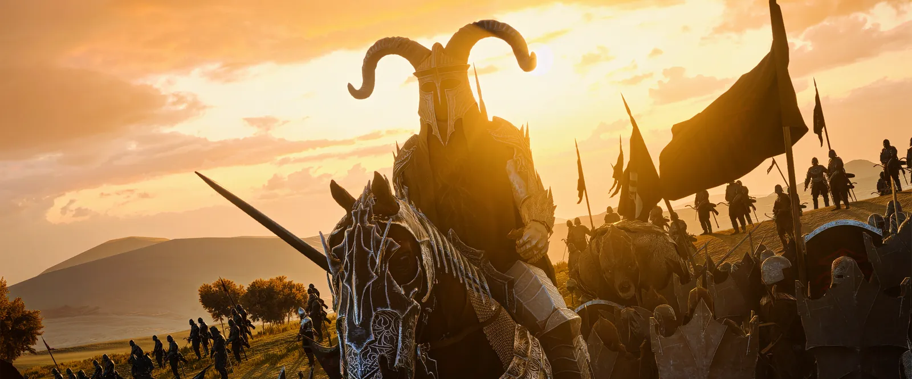
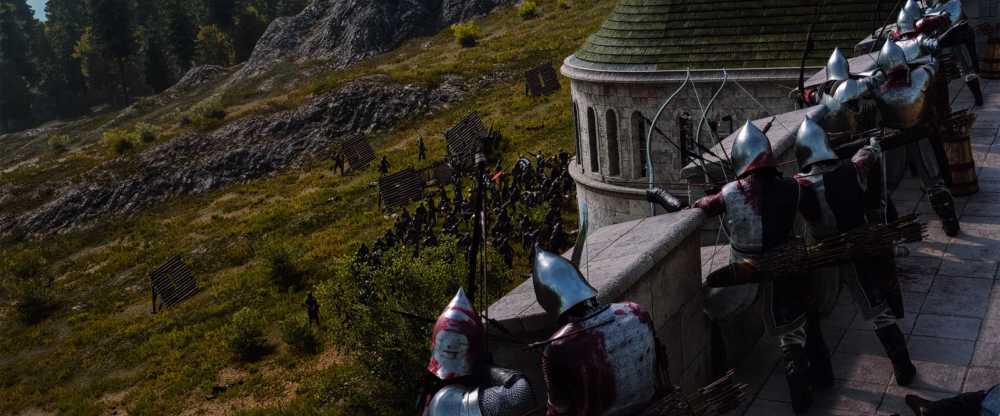
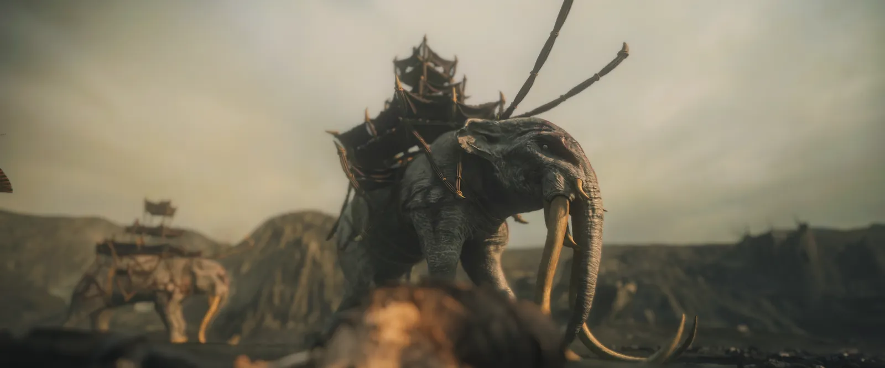
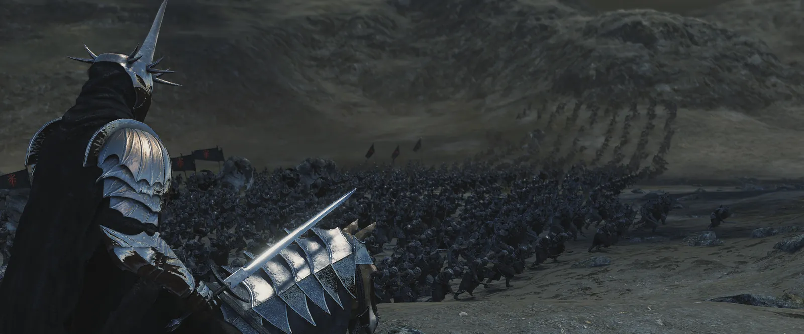
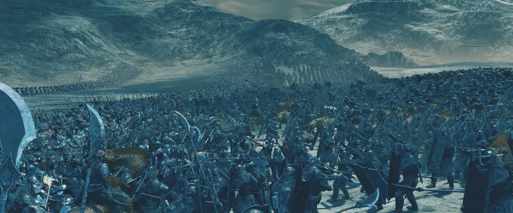
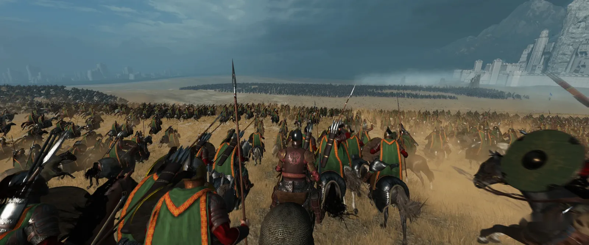

TAOM Mods
Add-on mods for Tales from the Age of Men, by MinimalCash63
Two mods for TAOM (Tales from the Age of Men), the Lord of the Rings mod for Mount & Blade II: Bannerlord 1.5.7. Each one is a separate module you add to Bannerlord's Modules folder next to TAOM.

Chapter I
TAOM AIO Compatibility Patch
Makes popular Bannerlord mods work with TAOM 2.0.41 or newer on Bannerlord 1.5.7, in single player and co-op. It doesn't edit or replace those mods; install them from their own pages.
Each mod has one switch in Mod Options (MCM), on the "TAOM AIO Compatibility Patch" page. A switch only does something when its mod is ticked. Most need a restart; the big-battle settings apply from the next battle.
Also under Releases. The zip holds the TAOM-AIO-Compat folder. Played in single player on v1.5.51; many parts new since v1.5.24 have not each been seen in a running game yet.
Downloaded times so far
Install
- Install TAOM and the mods you want from their own pages.
- Put the
TAOM-AIO-Compatfolder from the zip into Bannerlord'sModulesfolder. - In the launcher, tick "TAOM AIO Compatibility Patch" right after TAOM, above the mods it covers.
Not showing in the launcher? The folder is probably one level too deep. Modules\TAOM-AIO-Compat must hold SubModule.xml and bin directly.
Good to know
- Libraries: TAOM 2.0.41 provides Harmony, ButterLib, UIExtenderEx and Mod Configuration Menu itself. Keep its four library entries ticked, right after TAOM Dependencies and above Native. Don't install separate copies or the old Nexus dependency patch.
- Co-op: every player needs the same version of this module, the same mods and the same switches. Limitless, its big-battle options, Diplomacy, AI Influence, Fourberie and RBM are single player only; untick them before co-op.
- RBM is back, with TAOM's balance: one switch makes RBM run on TAOM's items, prices and money (single player only). Tick RBM near the end of the list, after Hold the Line, and start a new campaign the first time you play with it.
- TAOM Voices is on hold. The mod author has hidden the mod; support returns when it is re-released.
- Update notice: the mod tells you at the main menu when a new version is out. To turn it off: Mod Options > TAOM AIO Compatibility Patch > Warnings > "Check for updates at the main menu".
- RTS Camera: you don't need it with TAOM unless another mod requires it. TAOM has its own commander's camera (Seat of Seeing) and order system (Marshal's Word).
What each switch does
- Retinues: its Troops button on TAOM's map bar, co-op guards, and its editor button on TAOM's encyclopedia pages.
- Hold the Line: its Depth morale works under TAOM; TAOM's battle AI leads, culture discipline, TAOM's brace list, and a faster cavalry check for big battles.
- Bodyguards: no crash entering towns, castles and villages; escorts there and in hideouts (single player); pay in the daily wage; your culture's guard troop; its button on TAOM's hero page.
- TAOM Voices: on hold (see above).
- Xorberax's Legacy: TAOM's trolls, mumakil, spiders and Sauron keep TAOM's own hit rules; banks tied to the town treasury.
- Improved Garrisons: TAOM's party, food and money rules stay in charge, with its garrison costs on top; TAOM defaults button.
- Dual Wield: TAOM's dual-wielding troops with a corrected troop list; no separate Dual Wield - TAOM module needed.
- Dismemberment Plus: dismemberment that fits TAOM's races; creatures are never cut.
- Party Quality: doesn't reveal parties that TAOM's Hidden Hosts keeps hidden.
- Limitless (single player): fewer crashes at the start of big battles, battle-size and first-wave settings, formation and reinforcement options, and keeps TAOM's creature mounts on the field.
- TAOM escape menu: every button fits in the pause menu.
- Diplomacy (single player): Diplomacy works inside TAOM's diplomacy rules; its civil wars are off.
- AI Influence (single player): doesn't cancel TAOM's alliances and wars, gives it a Middle-earth world, and stops its fief and clan moves.
- Fourberie (single player): guards against errors with TAOM's races and items; TAOM troops, prices and bandits.
- RBM (single player): RBM's armour, damage, posture and battle AI run on TAOM's items; prices and money stay TAOM's.
- Your realm: no mercenaries of the other side (single player).
- Middle-earth sellswords: four mercenary companies in new campaigns.
- More Formation Banners: back flags follow TAOM's banner rule.
- Immersive Battlefields and Realistic Blood: sounds and looks that fit TAOM, on your PC.
- RTS Camera: a menu line and one marker display. BattleSize Resized: its helmet swap is off.
- TAOM item names: an item's culture tag comes first, e.g. "[Mordor] Fine Uruk Sword VI".
- Tier Visual: weighted troops (×2, ×3) keep their tier colour; TAOM colours; tier line on locked recruit slots.
- Culture tags on troop names: TAOM's caravan troops, militia and spider riders get a culture tag, e.g. "[Erebor] Caravan Guard".
The full tested load order, known issues and planned mods are on the GitHub page.
Reporting a bug: open an issue with your mod list, single player or co-op, and Documents\Mount and Blade II Bannerlord\Logs\taom_aio_compat.log renamed to .txt. Remove your Steam id and user name first.

Chapter II
TAOM Extra Loading Screens
Adds extra loading screen pictures to TAOM. TAOM's own loading pictures stay; the new ones are shown among them, picked at random like TAOM's.
All 30 pictures are in-game screenshots by 15 artists, taken from the community's screenshots in TAOM's official Discord. In game, each picture carries its artist's name in the bottom right corner. The pictures on this page are shown without it, with the artist named underneath.
Downloaded times so far
Also under Releases. The zip is about 116 MB and holds the TAOM-ExtraLoadingScreens folder.
Install
- Download the zip.
- Copy the
TAOM-ExtraLoadingScreensfolder into Bannerlord'sModulesfolder. If Windows' Extract All made an extra folder around it, copy the inner one. - In the launcher, tick "TAOM Extra Loading Screens". It loads after TAOM; its place below TAOM does not matter.
Good to know
- The pictures show only while TAOM's own setting "Themed Loading Screens" is on (Mod Options > TAOM - Tales From the Age of Men > Menus & Loading Screens; on by default).
- Co-op: loading screens are drawn on each player's own PC; nothing is shared. Either every player ticks this module or nobody does.
- Update notice: the mod tells you at the main menu when a new version is out. To turn it off, set
CheckForUpdates=falseinDocuments\Mount and Blade II Bannerlord\Configs\TAOM_ExtraLoadingScreens\settings.txt. - To remove it, untick it in the launcher or delete the folder. Saves are not affected.
Reporting a problem: open an issue, say which TAOM version you use and attach Documents\Mount and Blade II Bannerlord\Logs\taom_extra_loading_screens.log. If a picture is yours and you want it changed or removed, open an issue too.

Chapter III
Coodsz TAOM Tools
A client launcher and a dedicated server tool for playing TAOM in Bannerlord Co-op with friends. They are Coodsz's tools: get them, their instructions and their release notes from his page, and report problems there.
Each release says which Bannerlord, Co-op and TAOM versions it works with.
The tools zip has been downloaded times so far
Chapter IV
Load order
The order we play with, top to bottom in the launcher. Every module's own load-order rules are met in this order.
You can leave out any of the optional mods you don't use. Keep the ones you do use in the same order.
- TAOM Dependencies 2.0.42
- Harmony (provided by TAOM.Dependencies)
- ButterLib (provided by TAOM.Dependencies)
- UIExtenderEx (provided by TAOM.Dependencies)
- MBOptionScreen / MCM (provided by TAOM.Dependencies)
- Native 1.5.7
- SandBox Core 1.5.7
- Sandbox 1.5.7
- StoryMode 1.5.7
- CustomBattle 1.5.7
- Birth and Aging Options 1.5.7
- LOTRLOME Armory 2.0.42
- Dual Wield 0.10.9
- TAOM 2.0.42
- TAOM Map 2.0.42
- TAOM AIO Compatibility Patch 1.5.52
- TAOM - Age of the Ring Music 1.1.0
- Xorberax's Legacy 1.0.8.8
- Diplomacy 1.5.7
- AI Influence 7.0.6
- Fourberie 1.5.7.0
- Bodyguards Reloaded 1.2.13
- Retinues 2.0.0.16
- Limitless 1.0.2.2
- BattleSize Resized 2.0.4
- Dismemberment Plus 2.0.8.8
- Realistic Blood 1.1.7
- Perfect Fire Arrows 6.8.3
- Immersive Battlefields 3.7.0
- More Formation Banners 1.0.7
- Party Quality 1.2.3
- Tier Visual 2.6
- Improved Garrisons 4.3.1.0
- Hold the Line b0.2.5
- RBM (Realistic Battle Mod) 4.8.2
- TAOM Extra Loading Screens 1.0.1
Good to know
- RBM: tick it below TAOM, as in the list, and use the AIO v1.5.52 or newer, which runs RBM with TAOM's balance. Start a new campaign the first time you play with it.
- Leave RTS Camera and RTS Camera Command System unticked. TAOM has its own commander's camera and order system.
- Leave Coop and TAOM.CoopCompat unticked in single player. They are for co-op only.

On GitHub

Appendix
Credits and licences
TAOM AIO Compatibility Patch
By MinimalCash63. It covers these mods; none of their files are included, apart from the Dual Wield - TAOM troop list, used with permission.
- Retinues by bolaft
- Hold the Line - Infantry AI by UirosRios
- Bodyguards - Companion Escort Overhaul by Exiur, based on Bodyguards by carbon198
- Voices of the Age of Men by Theb0yys
- Xorberax's Legacy and Dismemberment Plus by TheSchwarz1, original mods by Xorberax, used with his permission
- Realistic Battle Mod (RBM) by Marnah93 and Philozoraptor; parts of the RBM switch come from the TAOM team's RBM patch by Theb0yys, used with permission
- Improved Garrisons by Sidies
- Party Quality by ormuszeus
- Limitless by BlocTheWorker, used with his permission
- Diplomacy by the Diplomacy Team
- AI Influence by MFive
- Fourberie by Spinozart1
- BattleSize Resized by Vombora
- Dual Wield and Dual Wield - TAOM by the TAOM mod developers
- Tier Visual by Alex822007
- Bannerlord Co-op by the Bannerlord Co-op team
Licence: free to use, ask to copy. Use it in your own games, single player and co-op. Don't re-upload it or share changed copies without permission. See its LICENSE. Links to each mod's own page are in the README.
TAOM Extra Loading Screens
Module by MinimalCash63. Loading screen art by Hialdir; Linden; Caveman; инсайт (insit7151); sid7116; Khamzra Hamûlid, the Two-Crowned; SpaceGuy; Sleepy; Linus; TimeAndSpace; Elendil the Tall; Kysaro; Hircine; TukTuk; Beregond "le Fidèle". The artists posted these pictures in TAOM's official Screenshots channel on Discord. Loading window and picture loader by the TAOM team (loading window design by Kysaro); this module only adds pictures to it.
Licence: free to use, ask to copy. The pictures belong to their artists. See its LICENSE.
This page
Pictures by Hialdir, Linden, SpaceGuy, sid7116 and TimeAndSpace, from TAOM Extra Loading Screens. They belong to their artists. Fonts: IM Fell English and IM Fell English SC by Igino Marini, EB Garamond by the EB Garamond Project Authors, all under the SIL Open Font License 1.1.
Coodsz TAOM Tools belong to Coodsz and come under his own licence (LICENSE.txt in each release).
